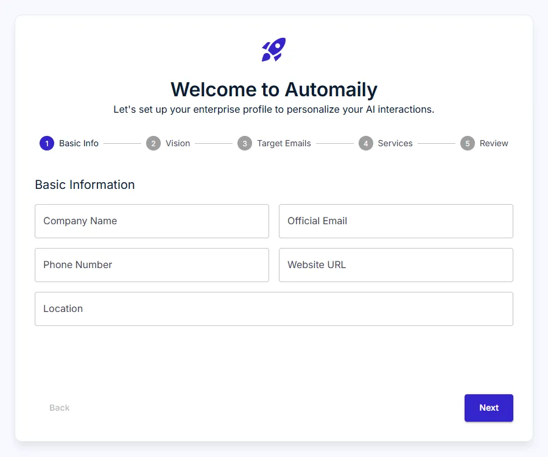

LLM Agents 2026

MailyFlow – AI Email Research & Briefing Platform
Backend & AI Engineer · Aug 2026 – Present
Multi-agent LLM pipeline that triages inbound customer emails, runs four parallel research scans and writes cited company briefings, with human approval before any email is drafted or sent. FastAPI backend on Render and Supabase PostgreSQL, validated with 700+ automated tests.